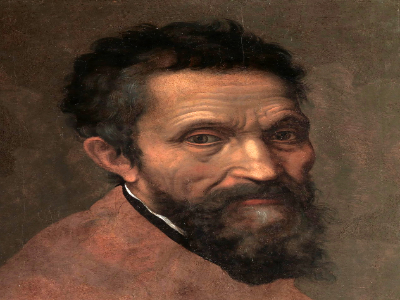

Bibliografia
Michelangelo Buonarroti (Caprese, 6 de marzo de 1475-Roma, 18 de febrero de 1564), conocido en español como Miguel Ángel, fue un arquitecto, escultor y pintor italiano renacentista, considerado uno de los más grandes artistas de la historia tanto por sus esculturas como por sus pinturas y obra arquitectónica. Desarrolló su labor artística a lo largo de más de setenta años entre Florencia y Roma, que era donde vivían sus grandes mecenas, la familia Médici de Florencia y los diferentes papas romanos. Fue el primer artista occidental del que se publicaron dos biografías en vida: Le vite de' più eccellenti pittori, scultori e architettori, de Giorgio Vasari, publicada en 1550 en su primera edición, en la cual fue el único artista vivo incluido, y Vita de Michelangelo Buonarroti, escrita en 1553 por Ascanio Condivi, pintor y discípulo de Miguel Ángel, que recoge los datos facilitados por el mismo Buonarroti. Fue muy admirado por sus contemporáneos, que le llamaban el Divino.4 Benedetto Varchi, el 12 de febrero de 1560, le envió una carta en nombre de todos los florentinos diciéndole:
... toda esta ciudad desea sumisamente poderos ver y honraros tanto de cerca como de lejos... Vuestra Excelencia nos haría un gran favor si quisiera honrar con su presencia su patria.